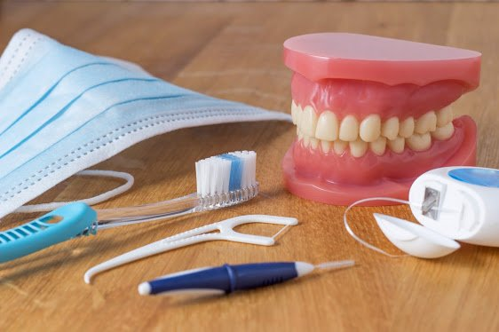

Língua Branca: O que eu devo fazer?
Você já notou uma camada esbranquiçada sobre a sua língua? Essa condição, conhecida como saburra lingual, é muito comum e pode ser resultado de diferentes fatores — sendo a falta de higienização da língua a principal delas.

Língua Branca ou Saburra Lingual
A língua branca (ou saburra lingual) ocorre porque a língua é um ambiente ideal para a proliferação bacteriana: ela é úmida, fechada e apresenta microvilosidades na sua superfície, o que facilita muito o acúmulo de restos alimentares e bactérias.
Ao longo do tempo, se você não limpar a língua regularmente, toda essa "sujeira" se acumula e forma uma película de bactérias ou fungos — chamada de saburra lingual — deixando a língua com aparência branca ou esbranquiçada.
Qual é o problema de ter a língua branca?
Se você pensou no mau hálito, acertou! Esse acúmulo de bactérias pode causar um cheiro forte e persistente na boca. Muitos pacientes chegam à nossa clínica com a queixa de mau hálito e, em grande parte dos casos, basta realizar uma higiene mais completa dos dentes e da língua para que o problema melhore bastante.
Como realizar a limpeza corretamente?
A limpeza da língua é simples e qualquer pessoa pode realizá-la. O Dr. Davi Frossard recomenda o uso do raspador de língua, que possui melhor eficiência na limpeza. Porém, se não tiver um, você pode usar a própria escova de dentes.
Com o raspador ou a escova, faça movimentos da parte de trás da língua para a frente (em direção à ponta), removendo toda a película branca. Isso deve ser feito pelo menos uma vez ao dia, de preferência antes de dormir.
Dica de Higiene
Utilize um raspador de língua todas as manhãs — ele é muito mais eficiente que a escova para remover a placa bacteriana lingual. Se a saburra persistir mesmo com a higiene correta, procure um dentista.
Outras causas possíveis
Mesmo que a falta de higienização seja a causa mais comum da língua branca, ela não é a única. Existem outras condições e doenças que podem provocar esse sintoma, como:
- Candidíase oral — infecção fúngica comum em pessoas com sistema imunológico deficiente
- Líquen plano — doença inflamatória crônica da mucosa oral
- Sífilis oral — infecção bacteriana que pode se manifestar na boca
- Leucoplasia — lesão branca na mucosa que pode ter caráter pré-maligno
Nestes casos, a ida ao dentista é essencial para o correto diagnóstico e tratamento. Se a camada branca na sua língua não sumir mesmo após higienização adequada, agende uma consulta imediatamente. Ligue para (21) 3513-8479 ou fale conosco via WhatsApp.